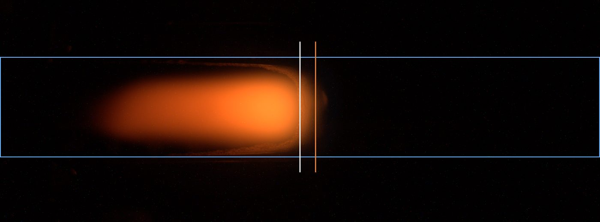

NASA BASS-II test B6: a 100 µm PMMA sheet burning against a slow airflow on the International Space Station. This page shows how GFL measured its spread rate, who attacked the result, where we were wrong, and what the number is now. You do not have to trust us: your browser re-checks every signed entry below.
1.99mm/s
leading-edge spread rate, provisional, while the air display read 3 cm/s (18.5–28.6 s); the flow speed at the sample is not established
Replaces 2.274 ± 0.094 mm/s (RES-001): window chosen by hand, flow changing inside it.
Signed ledger, re-verified in this browser
Preparing verification…
entry valid: content hash, chain link and Ed25519 signature recomputed (raw NASA files themselves are not part of this page) failed not yet checked
What GFL does today, and what it is designed to do
Built functions open their live section. Designed functions open their specification: what we want, how it will work, the data it needs, how it will be validated and what blocks it. When a function is built, its card switches state; nothing is presented as delivered before it is.
built implemented and tested on real data partial core implemented, missing parts stated designed specification only
How GFL is built: from each function to its code
Each tile is one function of GFL, placed in the layer where it works; data flows from the top layer down. Select a function to see what it needs, what it feeds, and the code behind it: each file opens here, down to the function.
needs the output of feeds ●●●○○checks met out of five: code, tests, run on NASA data, live on this page, documented
The five checks count evidence, not completeness: a function marked partial can meet all five and still have missing parts, which its card in the function map states. Maintained in research/fixtures/GFL_ARCHITECTURE_v1.json; the build fails if a listed file or record does not exist.
Bring data in, take results out, get a report
For a scientist, not a programmer. This page only reads; the three operations below each take one command on a computer that holds the GFL repository. Whatever comes in keeps the label of where it came from.
A paper, another team, NASA's own analysis. A table file (CSV) or JSON with: source, run, air_display, rate_mm_s, method, reference, and optionally lo_mm_s, hi_mm_s. GFL refuses rows with missing fields, never repairs them, and compares each value with its own measurement of the same run.python -m gfl_analysis import-results my_results.csv
A table of runs
A CSV laid out like NASA's BASS-II experimental table. GFL scans it for suspect values and ranks every run against a reference run.python -m gfl_analysis anomaly-table table.csv
The images of a run
A folder of raw camera stills (Nikon NEF) and the air display readings as JSON. GFL measures the spread rate with the frozen rule. Other image formats and video are not supported yet.python -m gfl_analysis measure B6 stills/ overlay.json
Take results out
One run
JSON (everything GFL holds on the run) and CSV (one row per constant-flow segment: flow, time window, frames, rate, interval, regime). Opens in any spreadsheet.
The whole provenance
The signed ledger (JSON Lines) and the same content in the W3C PROV-O standard (JSON-LD), readable by other provenance tools.
Everything on this page
Each chart and table is drawn from a JSON file listed under Files, with its fingerprint.
Get a report
What it is
One page per measured run: conditions as NASA recorded them, the rate with its three layers of uncertainty, the comparison with theory, what it may inform, what is not established, and the fingerprint of every file behind it. Print it from the browser to get a PDF.python -m gfl_analysis report B6
Reports ready now
What GFL cannot do yet
Stated here so nobody has to look for them. Each is a planned function or a known limit, not an oversight.
Upload a file through this page. The page only reads; import takes one command. Planned: upload with sealing on a server.
Seal a prediction from this page. The page computes what GFL expects ("Try it"); making it a registered prediction means signing it into the ledger, and the signing key never reaches a browser. One command does that.
Video and image formats other than Nikon NEF stills. Planned with the other NASA families.
A report across several runs, and PDF written directly (use the browser's Print).
Runs outside 21 % oxygen, 2 cm width and PMMA named in the record get no prediction: the flame temperature at other oxygen levels is not sourced.
The burning (pyrolysis) front. GFL measures the luminous edge; their offset has no bound.
Chemistry. GFL says when chemistry matters (near blow-off and quenching) and does not model it.
Other NASA combustion families (SoFIE, Saffire, FLEX, ACME): identified and kept separate, not analysed.
Imported values are source-reported and are never shown as GFL measurements.
B6 case file
Thirteen steps from first measurement to correction. Failures stay in the file: a rejected blind analysis, a fabricated audit, a withdrawn method and the superseded first result are as much part of the record as the result that stands.
The rate, and how much it depends on our choices
Leading edge (0.1 of each frame's own peak) for all 77 frames. Filled points pass every gate of the window rule; hollow points fail one (reason on hover). Shaded bands are airflow settings from the video overlay; the line is the fit on the only segment with enough usable frames.Same segment, eight front definitions, 95 % block-bootstrap intervals. The spread between definitions is a systematic effect of the sharpening flame edge, reported separately from statistics.The rule's own choices varied in a full grid: clipping limit, flow-change guard and overlay clock shift, 60 variants. Clipping limits of 5–20× the median select the same frames, so the grid gives 20 distinct rates, 1.88–2.07 mm/s; nothing was selected from it. The segment minimums and the flame and edge gates were not varied.
Why blind analysts got a third of our value (RES-019): the same definition on different frames
Frames
GFL, 0.1 of peak
Blind deepseek_v4
Blind kimi26
Predictions written down before the data were opened
Before three more NASA runs were downloaded, GFL sealed and timestamped what thin-fuel flame theory says their spread rates should be, as ratios to B6, with a pass band for each. The measurement rule was frozen first. Every outcome is shown, including the ones that went against us: a prediction that cannot be tested is never counted as supported.
Prediction
Band (ratio to B6)
Measured
Ratio
Verdict
After the protocol: B11 under a repaired rule, and the thickness trend
Blind test: can anyone, GFL included, state an honest interval?
Ask GFL: the analysis, question by question
Seven questions a combustion scientist asks of a microgravity flame-spread run, each answered by one analysis module on the four runs measured so far. The same code will run unchanged on the official challenge data; until then every answer here is open. Every number names its source, and a property without a source in the project library is labelled approximate.
1. What was measured, and how sure are we?
Spread rate of the luminous leading edge, for every flow level that passed the frozen window rule. Bars are the reported 95 % intervals.

The same frozen rule at lower oxygen (17 %)
Run
Initial O₂
Air display
Frames
Rate, mm/s
Interval, mm/s
2. What does combustion theory expect?
The classical thin-fuel theory for opposed-flow spread (de Ris; Delichatsios; extended simplified theory) predicts a rate set by heat transfer and inversely proportional to thickness. The band covers the three published constants and the published range of the flame-temperature ratio F.
Run
Measured
Thin-fuel theory
Measured / lowest theory
3. Which regime is each run in, and does chemistry matter?
Chemistry matters only near the limits: at high flow the flame is slowed by finite-rate kinetics and blows off; at very low flow, possible only in microgravity, radiation losses quench it. Between them, in the thermal regime, heat transfer alone sets the rate. Each curve reaches 1 at its limit.
4. Can a finding from one run be used for another?
Every condition that decides it is computed from the records, then judged by the deterministic engine. Hover a cell for its reason.
5. Test your own expectation before you look
Try it: what does GFL expect for a run nobody has measured?
Target
Law
Expected ratio to B6
Band
Expected rate
Status
6. Is the data clean?
Test
Check
Value
7. Where does each number come from?
What the AI models found, and what survived
Several AI models worked on B6 in separate roles: blind analysts who never saw GFL's result, red teams, and an adversarial auditor. Most of them were coordinated through AAL, the team's own local-first system for governed multi-model analysis over MCP and API. GFL did not take their word for anything: it re-ran their code and checked their claims against the data. Findings are ranked by that check, not by the model's confidence.
Can a finding inform another context?
GFL's differentiator: three questions kept apart. Does a source address the question (relevance)? Are the governing conditions characterised well enough (comparability)? Can the finding inform another context, and within which limits (transferability)? The deterministic engine below answers the third for the PMMA-100 case: microgravity BASS-II against normal-gravity downward spread. Unknown is never treated as compatible, and a conflict between sources is not read as a physical incompatibility.
Physical gate
State
Passes when
Which NASA runs could test this result?
A deterministic ranking of the 129 rows in NASA's BASS-II experimental table against B6 at airflow setting 3. Each recorded condition is compared one by one; an empty or unreadable cell counts against a run, never for it. This ranks what the table records. It does not establish that two runs are physically equivalent.
Which papers address our open questions?
Question one, relevance, answered by NASA and IBM's INDUS retriever over the project's literature library. Each open point in the B6 analysis is a question; the passages that address it are listed with file and page. A high score means the passage is about the question. It does not mean its conditions are comparable or that its finding transfers.
Beyond B6: the NASA combustion families
B6 is where GFL goes deepest, not the limit of its scope. Each NASA family enters through the same ladder, and no family is skipped ahead. Families are not pooled because they all concern fire in microgravity: fuel phase, apparatus, scale and observables differ, and a finding crosses families only through the transfer engine.
Every result, decision, issue and idea in the GFL register, with its history and the ledger entries that seal its files. Ask whether something has been tried before, and see what happened to it, including when it failed.
Evidence Vault
Primary evidence is sealed: instrument files and source tables (tiers 1–2) are content-addressed in signed entries and can never be edited, only qualified or superseded by new entries. Analyses (tiers 3–4) stay outside, open to correction. The vault's write-once storage and the portable black box are designed, not built; their specifications are linked in the function map.
Sealed content
Who can sign what
External anchors
Sealed tier 1–2 objects
Seq
Tier
Object
SHA-256
Where the bytes are
Files
Every file sealed in the ledger, as folders. For each: what it is, what produced it, its size, its SHA-256 fingerprint and the ledger entry that seals its latest version. NASA's raw files are listed with their fingerprints but are not published here; they are downloaded from the NASA PSI archive.
Ledger entries
Append-only, hash-chained, Ed25519-signed. The pipeline key signs processing entries; only the owner's separate key can sign approvals. Raw NASA files are not published with this page: their entries are verified here, their bytes by gfl verify wherever the data is present, which reports absent files as missing, never as verified.